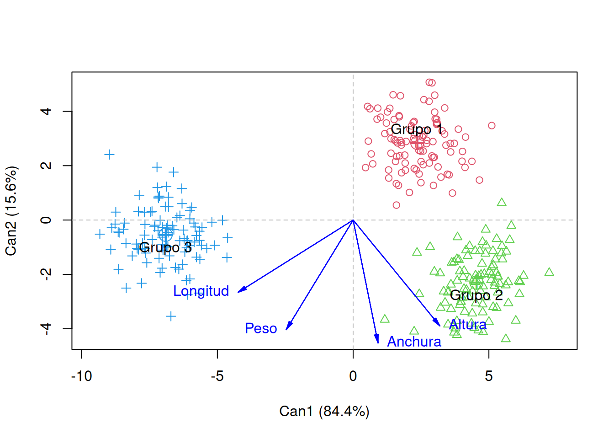
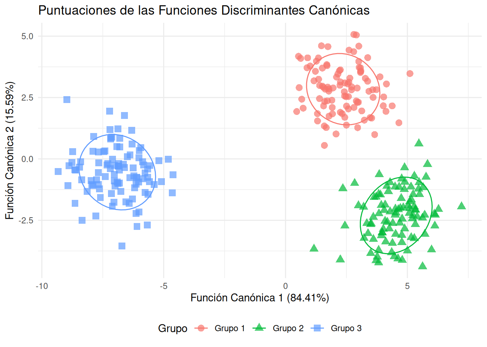
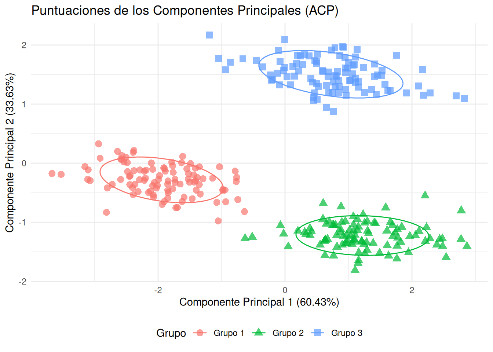
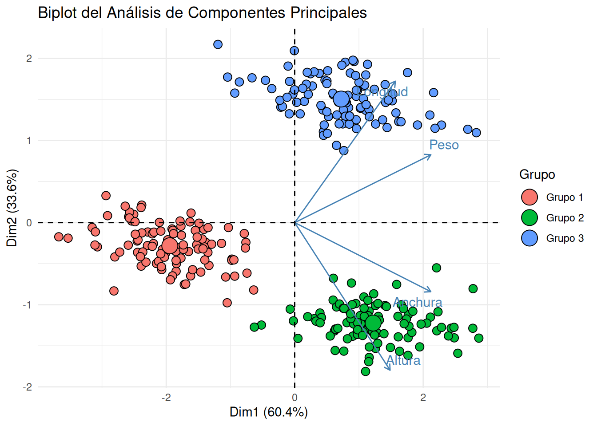
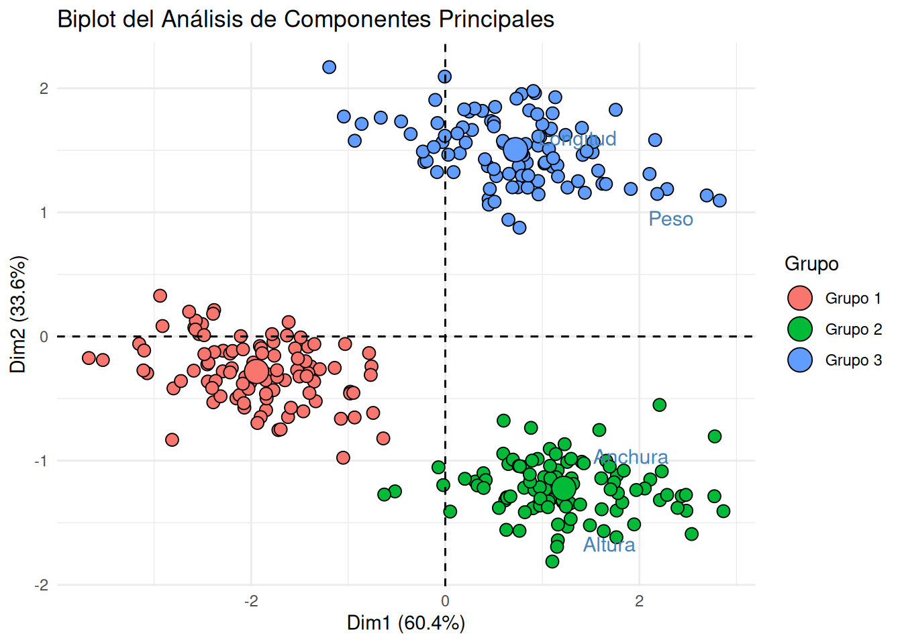

El Análisis Discriminante Canónico (ADC) es una técnica estadística multivariante utilizada para clasificar observaciones en grupos predefinidos y para identificar las dimensiones que mejor separan a estos grupos. Es particularmente útil cuando se tienen múltiples variables predictoras y una variable de resultado categórica (los grupos). El ADC busca combinaciones lineales de las variables predictoras (llamadas funciones discriminantes canónicas) que maximizan la separación entre las medias de los grupos, minimizando a su vez la varianza dentro de los grupos.
Objetivos del ADC:
Descripción: Entender cómo los grupos difieren entre sí en términos de las variables predictoras.
Clasificación: Desarrollar reglas para asignar nuevas observaciones a uno de los grupos.
Reducción de Dimensionalidad: Reducir el número de variables originales a un conjunto más pequeño de funciones discriminantes canónicas.
¿Cómo funciona?
El ADC transforma las variables originales en un nuevo conjunto de variables no correlacionadas (las funciones discriminantes canónicas). La primera función discriminante canónica explica la mayor proporción de la varianza entre los grupos, la segunda función explica la mayor proporción de la varianza restante, y así sucesivamente. El número máximo de funciones discriminantes que se pueden extraer es el mínimo entre el número de grupos menos 1 y el número de variables predictoras.
Simulación de Datos
Para ilustrar el ADC, utilizaremos un conjunto de datos simulado. Hemos creado tres grupos distintos (Grupo 1, Grupo 2, Grupo 3), cada uno con 100 observaciones y cuatro variables (Longitud, Anchura, Altura, Peso). Los grupos tienen diferentes medias, pero comparten la misma estructura de covarianza, lo que facilita la discriminación.
Mostrar código
set.seed(12) # Para reproducibilidad## Parámetros comunes a los tres grupos# Matriz de covarianza (misma estructura de correlación para todos)sigma <-matrix(c(4.0, 3.8, 3.6, 3.5, # Longitud3.8, 9.0, 6.3, 6.0, # Anchura3.6, 6.3, 16.0, 12.0, # Altura3.5, 6.0, 12.0, 25.0# Peso), nrow =4, byrow =TRUE)# Nombres de las variablescolnames(sigma) <-rownames(sigma) <-c("Longitud", "Anchura", "Altura", "Peso")## Medias para cada grupo (distintos promedios)mu_grupo1 <-c(5, 10, 20, 15)mu_grupo2 <-c(10, 20, 40, 30)mu_grupo3 <-c(20, 15, 20, 35)## Simular datos para cada grupon <-100# Tamaño muestral por grupogrupo1 <-as.data.frame(mvrnorm(n, mu = mu_grupo1, Sigma = sigma))grupo2 <-as.data.frame(mvrnorm(n, mu = mu_grupo2, Sigma = sigma))grupo3 <-as.data.frame(mvrnorm(n, mu = mu_grupo3, Sigma = sigma))# Añadir identificador de grupogrupo1$Grupo <-"Grupo 1"grupo2$Grupo <-"Grupo 2"grupo3$Grupo <-"Grupo 3"# Combinar todos los datosdatos <-rbind(grupo1, grupo2, grupo3)datos$Grupo <-factor(datos$Grupo)# Mostrar las primeras filas de los datos combinadoshead(datos)
Longitud Anchura Altura Peso Grupo
1 0.8467454 6.058307 27.20717 24.255495 Grupo 1
2 2.0788944 7.466149 14.72953 7.846243 Grupo 1
3 4.1264746 11.315870 18.55966 23.441392 Grupo 1
4 5.2139210 10.806153 26.09965 17.579990 Grupo 1
5 8.3905717 11.117605 28.09077 23.953821 Grupo 1
6 6.7328440 11.199520 17.01076 18.491874 Grupo 1
Visualización de los Datos Originales
Antes de aplicar el ADC, es útil visualizar la distribución de las variables para cada grupo. Esto nos puede dar una idea preliminar de si los grupos son separables. Dado que tenemos cuatro variables, es difícil visualizarlas todas a la vez. Sin embargo, podemos ver las distribuciones por pares o usando gráficos de caja.
Mostrar código
# Crear un gráfico de pares para visualizar la superposición de los grupos en las variables originalesggplot(datos, aes(x = Longitud, y = Anchura, color = Grupo)) +geom_point(alpha =0.6) +stat_ellipse(aes(group = Grupo), type ="norm", level =0.68) +# Elipses de confianza del 68%labs(title ="Dispersión de Longitud vs. Anchura por Grupo",x ="Longitud",y ="Anchura") +theme_minimal() +facet_wrap(~ Grupo) # Muestra un panel por grupo
El gráfico de dispersión anterior muestra la relación entre “Longitud” y “Anchura” para cada grupo. Las elipses de confianza del 68% (que representan aproximadamente una desviación estándar en cada dirección) ya sugieren cierta separación entre los grupos, aunque con alguna superposición. Esto es un indicio de que el ADC podría ser efectivo.
Realización del Análisis Discriminante Canónico en R
En R, el ADC se puede realizar utilizando la función lda() del paquete MASS. Una vez que tenemos el modelo lda, podemos usar la función candisc() del paquete candisc para extraer las funciones discriminantes canónicas y visualizar la separación.
Mostrar código
# Paso 1: Ajustar un modelo lineal multivariado (MLM)# Esto es lo que 'candisc' espera como entrada.# 'cbind(Longitud, Anchura, Altura, Peso)' especifica las variables dependientes.# 'Grupo' es la variable independiente (el factor de agrupación).modelo_mlm <-lm(cbind(Longitud, Anchura, Altura, Peso) ~ Grupo, data = datos)# Paso 2: Realizar el Análisis Discriminante Canónico con candisc()# Ahora, 'candisc' puede procesar correctamente el objeto 'mlm'.can_disc <-candisc(modelo_mlm)# Resumen de los resultadossummary(can_disc)
Canonical Discriminant Analysis for Grupo:
CanRsq Eigenvalue Difference Percent Cumulative
1 0.96137 24.8844 20.288 84.408 84.408
2 0.82132 4.5966 20.288 15.592 100.000
Class means:
Can1 Can2
Grupo 1 2.365 2.84043
Grupo 2 4.541 -2.30050
Grupo 3 -6.906 -0.53993
std coefficients:
Can1 Can2
Longitud -1.04470 -0.354641
Anchura 0.51088 -0.074219
Altura 0.85516 -0.628138
Peso -0.54457 -0.170350
Interpretación de los Resultados
El resumen de candisc nos proporciona información clave:
Valores Canónicos (Eigenvalues): Representan la varianza explicada por cada función discriminante canónica. Cuanto mayor el valor, más importante es esa función para separar los grupos.
Proporción Acumulada: Indica el porcentaje acumulado de la varianza entre grupos explicada por las funciones discriminantes hasta ese punto.
Coeficientes de las Funciones Discriminantes Canónicas: Muestran cómo cada variable original contribuye a cada función canónica. Estos coeficientes son útiles para interpretar la naturaleza de cada dimensión.
En nuestro caso, esperamos dos funciones discriminantes canónicas, ya que tenemos tres grupos (número de grupos - 1).
Visualización de las Funciones Discriminantes Canónicas
Una de las principales ventajas del ADC es la capacidad de visualizar la separación de los grupos en el espacio de las funciones discriminantes canónicas. Un gráfico de dispersión de las dos primeras funciones canónicas nos permite observar la separación de los grupos de manera más clara que en el espacio original de las variables.
Mostrar código
# Graficar las puntuaciones canónicas usando el método de plot para objetos candiscplot(can_disc)#, what = "scores")
Vector scale factor set to 5.048

Mostrar código
# Un gráfico más personalizado usando ggplot2# Extraer las puntuaciones canónicas del objeto can_discscores <-as.data.frame(can_disc$scores)scores$Grupo <- datos$Grupoggplot(scores, aes(x = Can1, y = Can2, color = Grupo, shape = Grupo)) +geom_point(alpha =0.7, size =3) +stat_ellipse(aes(group = Grupo), type ="norm", level =0.68) +labs(title ="Puntuaciones de las Funciones Discriminantes Canónicas",x =paste0("Función Canónica 1 (", round(can_disc$pct[1], 2), "%)"),y =paste0("Función Canónica 2 (", round(can_disc$pct[2], 2), "%)")) +theme_minimal() +theme(legend.position ="bottom")

Este gráfico es el corazón del análisis discriminante. Aquí vemos las observaciones proyectadas sobre el espacio de las funciones discriminantes canónicas. Podemos observar claramente que:
La Función Canónica 1 (Can1) es la que explica la mayor parte de la varianza entre los grupos y es la que más separa a los Grupo 1 y Grupo 3 de los Grupo 2.
La Función Canónica 2 (Can2) ayuda a distinguir Grupo 2 de los otros dos, aunque su poder discriminatorio es menor.
Las elipses de confianza nos dan una idea de la dispersión de cada grupo en este nuevo espacio. La baja superposición de las elipses indica que las funciones discriminantes han sido exitosas en separar los grupos.
Coeficientes y Vectores Canónicos
Los coeficientes de las funciones discriminantes canónicas nos indican la contribución de cada variable original a la formación de cada función discriminante. Estos coeficientes son útiles para interpretar qué variables son más importantes para discriminar entre los grupos.
Mostrar código
# Mostrar los coeficientes de las funciones discriminantes canónicasprint(can_disc$coef)
NULL
Mostrar código
# Mostrar los vectores canónicos estandarizados (correlaciones entre variables originales y funciones canónicas)# Estos son más fáciles de interpretar en términos de la importancia relativa.print(can_disc$structure)
Los coeficientes de las funciones canónicas (can_disc$coef) nos dan los pesos de cada variable en la combinación lineal que forma cada función discriminante. Un valor absoluto mayor indica una mayor contribución.
Los vectores canónicos estandarizados (can_disc$structure), también conocidos como cargas de estructura, son las correlaciones entre cada variable original y cada función discriminante canónica. Son a menudo más fáciles de interpretar ya que no están afectados por las unidades de medida de las variables originales. Un valor cercano a 1 o -1 indica una fuerte relación. Por ejemplo:
La Función Canónica 1 parece estar fuertemente correlacionada con Altura y Peso, lo que sugiere que estas variables son las más importantes para la discriminación principal.
La Función Canónica 2 podría estar más relacionada con Longitud y Anchura en un sentido secundario.
Conclusión
El Análisis Discriminante Canónico es una herramienta poderosa para entender la separación entre grupos y para identificar las variables que más contribuyen a esta separación. En nuestro ejemplo simulado, pudimos observar cómo las cuatro variables originales se combinan en dos funciones discriminantes canónicas que logran una clara separación de los tres grupos. Esta técnica no solo ayuda en la descripción de las diferencias grupales, sino que también sienta las bases para la clasificación de nuevas observaciones en los grupos ya establecidos.
Realización del ACP para comparación
Utilizaremos la función prcomp() para realizar el ACP sobre nuestras variables numéricas.
Mostrar código
# Seleccionar solo las variables numéricas para el ACPdatos_numericos <- datos %>%select(-Grupo)# Realizar el Análisis de Componentes Principalespca_resultado <-prcomp(datos_numericos, scale. =TRUE) # scale.=TRUE estandariza las variables# Resumen del resultado del ACPsummary(pca_resultado)
Importance of components:
PC1 PC2 PC3 PC4
Standard deviation 1.5548 1.1598 0.41215 0.26033
Proportion of Variance 0.6043 0.3363 0.04247 0.01694
Cumulative Proportion 0.6043 0.9406 0.98306 1.00000
Mostrar código
# Extraer las puntuaciones de los componentes principalespca_scores <-as.data.frame(pca_resultado$x)pca_scores$Grupo <- datos$Grupo # Añadir la variable de grupo para colorear# Gráfico de dispersión de los dos primeros componentes principalesggplot(pca_scores, aes(x = PC1, y = PC2, color = Grupo, shape = Grupo)) +geom_point(alpha =0.7, size =3) +stat_ellipse(aes(group = Grupo), type ="norm", level =0.68) +labs(title ="Puntuaciones de los Componentes Principales (ACP)",x =paste0("Componente Principal 1 (", round(summary(pca_resultado)$importance[2,1]*100, 2), "%)"),y =paste0("Componente Principal 2 (", round(summary(pca_resultado)$importance[2,2]*100, 2), "%)")) +theme_minimal() +theme(legend.position ="bottom")

Mostrar código
# Asegurarse de que el objeto pca_resultado esté disponible (ejecutar chunks anteriores si es necesario)# pca_resultado ya fue calculado en la sección anterior:# pca_resultado <- prcomp(datos_numericos, scale. = TRUE)# Creamos una versión "coloreable" del biplot.# El biplot base de R es un poco limitado en personalización directa del color por grupo.# Aquí, usaremos la función plot del paquete `ggfortify` para un biplot más estético con ggplot2,# o podemos simularlo manualmente si preferimos no añadir otro paquete.# Para este ejemplo, voy a mostrar cómo hacerlo con el paquete 'factoextra' que es excelente para visualización de PCA.# Si aún no lo tienes instalado: install.packages("factoextra")library(factoextra)
Welcome! Want to learn more? See two factoextra-related books at https://goo.gl/ve3WBa
Mostrar código
# Biplot utilizando factoextra para una mejor estética y manejo de gruposfviz_pca_biplot(pca_resultado,# Geometríasgeom.ind ="point", # Muestra las observaciones como puntospointshape =21, # Forma de los puntosfill.ind = datos$Grupo, # Rellena los puntos por grupocol.ind ="black", # Borde de los puntospointsize =3, # Tamaño de los puntosgeom.var =c("arrow", "text"), # Muestra las variables como flechascol.var ="steelblue", # Color de las flechas# Etiquetasrepel =TRUE, # Evita la superposición de etiquetas# Tema y títulostitle ="Biplot del Análisis de Componentes Principales",legend.title =list(fill ="Grupo")) +theme_minimal()

Mostrar código
# Asegurarse de que el objeto pca_resultado esté disponible (ejecutar chunks anteriores si es necesario)# pca_resultado ya fue calculado en la sección anterior:# pca_resultado <- prcomp(datos_numericos, scale. = TRUE)# Si aún no lo tienes instalado: install.packages("factoextra")library(factoextra)# Biplot utilizando factoextra para una mejor estética y manejo de gruposfviz_pca_biplot(pca_resultado,# Geometrías para las observacionesgeom.ind ="point", # Muestra las observaciones como puntospointshape =21, # Forma de los puntosfill.ind = datos$Grupo, # Rellena los puntos por grupocol.ind ="black", # Borde de los puntospointsize =3, # Tamaño de los puntos# Geometrías para las variables (¡aquí está el cambio clave!)geom.var ="text", # Muestra los nombres de las variables (texto)# geom.var = c("point", "text"), # Si también quieres un punto en el origen de la flechacol.var ="steelblue", # Color de las etiquetas de las variables# Etiquetaslabel ="var", # ¡Importante! Muestra las etiquetas de las variablesrepel =TRUE, # Evita la superposición de etiquetas# Tema y títulostitle ="Biplot del Análisis de Componentes Principales",legend.title =list(fill ="Grupo")) +theme_minimal()

Comparación entre ACP y ADC
Al comparar el gráfico de ACP con el gráfico de ADC (que generamos anteriormente), notamos diferencias clave:
Objetivo:
ACP: Busca las direcciones de máxima variabilidad total en los datos. No se preocupa por las etiquetas de los grupos.
ADC: Busca las direcciones (funciones discriminantes) que maximizan la separación entre los grupos. Utiliza activamente la información de los grupos.
Visualización de la Separación:
En el gráfico de ACP, aunque podemos observar cierta separación entre los grupos debido a la estructura inherente de los datos (ya que los grupos tienen medias diferentes), esta separación no es el objetivo principal del ACP. Las elipses de confianza pueden mostrar más solapamiento. Por ejemplo, en nuestro gráfico de ACP, el Grupo 1 y el Grupo 3 podrían parecer un poco más cercanos o solapados en una de las dimensiones principales que en el gráfico de ADC.
En el gráfico de ADC, la separación de los grupos es mucho más pronunciada y clara. Esto se debe a que las funciones discriminantes están diseñadas específicamente para maximizar esa distancia inter-grupos. Las elipses de confianza de los grupos tendrán una menor superposición, indicando una mejor discriminación.
Interpretación de las Dimensiones:
Las componentes principales del ACP son combinaciones lineales de las variables originales que explican la varianza total de los datos. Su interpretación puede ser más abstracta y no necesariamente relacionada con la discriminación de grupos.
Las funciones discriminantes canónicas del ADC son combinaciones lineales de las variables originales que maximizan la separación entre las medias de los grupos. Su interpretación está directamente relacionada con las características que diferencian a los grupos.
En resumen, mientras que el ACP es excelente para la exploración de datos y la reducción de dimensionalidad general, el ADC es superior para problemas de discriminación y clasificación de grupos cuando se tiene información previa sobre la pertenencia a un grupo.